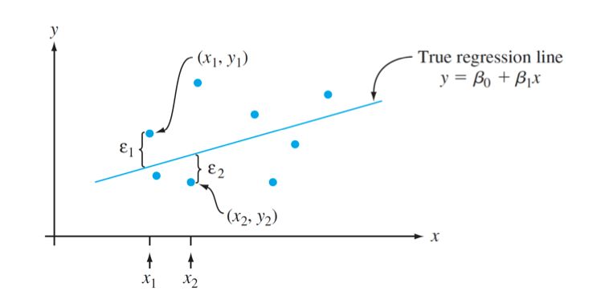

12.1 and 12.2: The Simple Linear Model and Parameter Estimation
Mathematical Statistics
MATH 365
Topics for Today
📊 Simple Linear Regression Model
🔢 Least Squares Estimation of Parameters
🧮 Estimating Variance and \(R^2\)
📈 Visualizing data and interpreting output
💻 Regression in R with lm(), summary(), and anova()
Motivating Question: How do we model the relationship between two variables and make predictions using observed data?
Modeling the Effect of Advertising on Sales
💡 A classic question in business and economics:
“Did the advertising campaign increase sales?”
Firms invest heavily in advertising. They want evidence that their spending leads to measurable gains.
So How Do You Answer That?
You have data: weekly ad spending, sales revenue, market conditions.
You suspect: more advertising → higher sales.
But: sales fluctuate due to many factors — holidays, pricing, competitors, random noise…
❓How do we isolate the effect of advertising from everything else?
Can we quantify the average change in sales per $1000 spent?
Can we separate signal from noise?
Can we predict sales based on ad spending?
The Role of a Statistical Model
A statistical model gives us a way to describe and estimate relationships between variables.
We assume: \[
\text{Sales} = f(\text{Ad Spending}) + \varepsilon
\]
Where:
- \(f(\cdot)\) is the systematic trend we want to estimate
- \(\varepsilon\) is the random variation due to unmeasured or uncontrollable factors
The Key Idea of Regression
Note
“The key idea in developing a probabilistic relationship between a dependent or response variable \(y\) and an independent, explanatory, or predictor variable \(x\) is to realize that once the value of \(x\) has been fixed, there is still uncertainty in what the resulting \(y\) value will be.” (Devore & Berk, 2012)
We seek to characterize the stochastic dependence of the random variable \(Y\) given \(x\).
Model:
\[
Y = f(x) + \epsilon
\]
The Simple Linear Model
We focus on linear models of the form:
\[
Y = \beta_0 + \beta_1 x + \epsilon
\]
Important
Where:
- \(\epsilon \sim N(0, \sigma^2)\)
- \(\epsilon\)’s are independent
- Each \((x_i, y_i)\) pair is a realization from this model
We aim to estimate \(\beta_0\), \(\beta_1\), and \(\sigma^2\) from the data.
A Linear Probabilistic Model
Instead of a deterministic relationship, we assume:
The expected value of \(Y\) is a linear function of \(x\):
\[
E(Y | x) = \beta_0 + \beta_1 x
\]
And the observed \(Y\) deviates from this expected value due to random error \(\epsilon\).
Visualizing the Simple Linear Regression Model

Devore Fig 12.3
Estimating Model Parameters
Use the method of least squares to find the coefficients \(\widehat\beta_0\) and \(\widehat\beta_1\) that minimize the sum of squared errors: